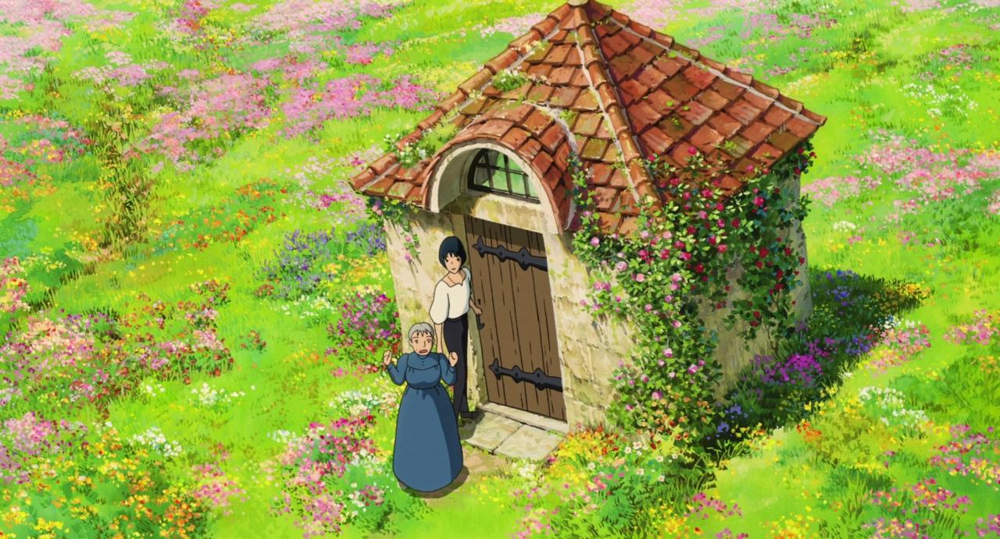

Rédigé par Marina Meloni • 2 min 30 de lecture
Reconnu pour son talent inégalé en animation et son imagination débordante, Hayao Miyazaki a laissé une empreinte indélébile sur le monde du cinéma. Sa motivation pour créer "Le Château Ambulant" peut être retracée jusqu'à son profond sens de la justice, en particulier pendant la guerre en Irak.
L'engagement de Miyazaki envers le pacifisme a été un thème récurrent dans ses œuvres. Il croit en le pouvoir du récit pour transmettre les conséquences dévastatrices de la guerre et des conflits. C'est cette conviction qui se retrouve dans la trame narrative de ce film. Le film sert de puissant véhicule pour illustrer la futilité de la guerre, un thème sous-jacent qui résonne fortement avec son créateur.
L'année 2003 a marqué l'invasion de l'Irak par une coalition dirigée par les États-Unis. La guerre a suscité des préoccupations mondiales et a provoqué des manifestations généralisées, y compris au Japon. Pour Miyazaki, un critique farouche du militarisme et de la guerre, les événements de l'époque ont enflammé un profond sentiment d'injustice. C'est dans ce contexte que "Le Château Ambulant" prend une signification accrue, car la narration reflète les opinions de Miyazaki sur les conséquences des conflits.
Photo tirée du film, engins de guerre.
Le génie de Miyazaki réside dans sa capacité à mêler des thèmes complexes à une animation à couper le souffle. Ses films transportent les spectateurs dans des mondes imaginaires vibrants, regorgeant de personnages uniques et d'histoires captivantes. "Le Château Ambulant" ne fait pas exception. Le château éponyme, avec son design fantaisiste et ses caractéristiques enchanteresses, est un témoignage de sa créativité sans limites. Le don de Miyazaki pour créer des environnements détaillés et complexes insuffle de la vie dans les paysages qui servent de toile de fond aux aventures de ses personnages.
Les personnages eux-mêmes sont un témoignage du talent narratif de Miyazaki. Howl, le sorcier complexe et multifacette, est emblématique de la nuance qui caractérise l'œuvre de Miyazaki. La transformation de Howl tout au long du film reflète la transformation du monde qui l'entoure, influencée par les marées de la guerre et de l'amour.
L'engagement de Miyazaki envers le récit ne se limite pas à son désir de divertir ; c'est un moyen par lequel il espère transmettre ses opinions et plaider en faveur d'un monde plus pacifique. Le film est une manifestation de cette mission. C'est une mosaïque d'animation époustouflante, de développement de personnages élaboré et d'un message puissant sur la futilité de la guerre.
Photo tirée du film, la paisible maison d'enfance de Howl.
En conclusion, la motivation de Hayao Miyazaki pour créer "Le Château Ambulant" est un témoignage de son engagement inébranlable envers le pacifisme et son profond sentiment d'injustice. Le film est un puissant moyen de transmettre ses opinions sur les conséquences des conflits, reflétant sa conviction que le récit peut servir de moyen pour plaider en faveur d'un monde plus pacifique. Le talent immense de Miyazaki en animation et son imagination débordante ont non seulement enrichi le monde de l'animation, mais ont également démontré le potentiel du médium pour communiquer des messages profonds et susciter la réflexion.
À travers ses œuvres visionnaires, Miyazaki a laissé une empreinte indélébile sur le monde de l'animation, nous rappelant que le récit peut être une force de changement et une source d'inspiration pour les générations à venir.
prochain article